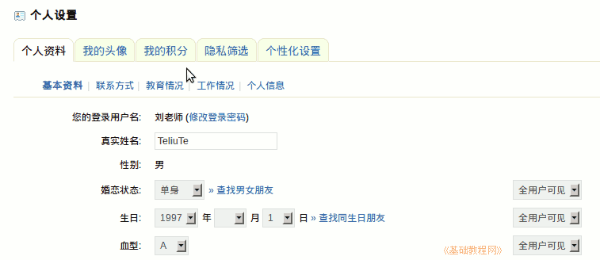
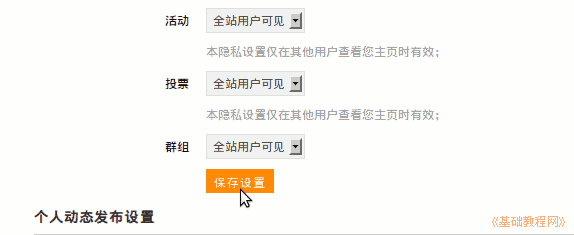

2011-2012 第一学期七年级电脑操作基础教学课程设计
作者：TeliuTe 来源：基础教程网
四、设置个人信息 返回目录 下一课学习目标：学会设置自己的个人信息；
注意事项：隐私设置里设置允许别人访问；
1、设置个人信息
1）登录自己的用户，在右上角找到“设置”按钮点击进入；
2）依次点击各个设置标签，输入相应的内容；

3）个人资料可以填真实的，也可以填虚拟的；
4）填完一项注意要点下边的“保存设置”；

课后记 2011-9-6 18:56：
连着四节，还有一节本节学习了设置个人信息的基础知识，如果你成功地完成了练习，请继续学习下一课内容；
本教程由86团学校TeliuTe制作|著作权所有
基础教程网：http://teliute.org/
美丽的校园……
转载和引用本站内容，请保留版权信息和本站链接。